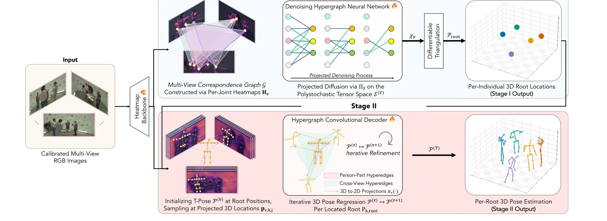
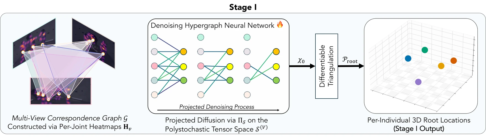
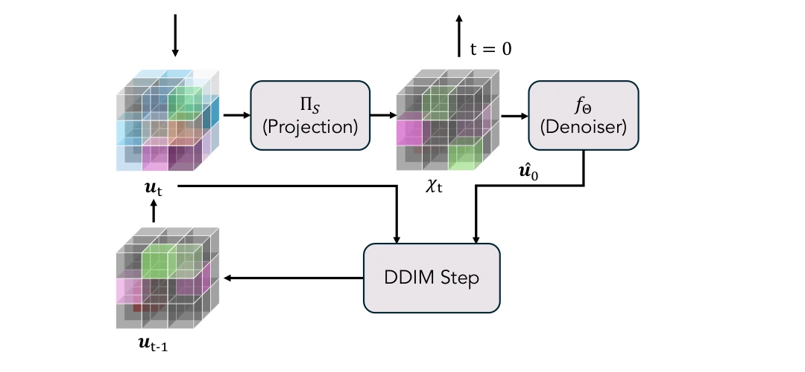
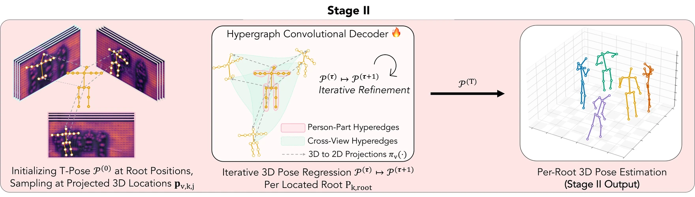
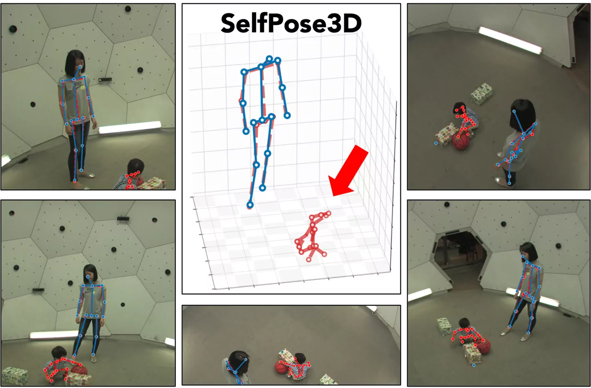
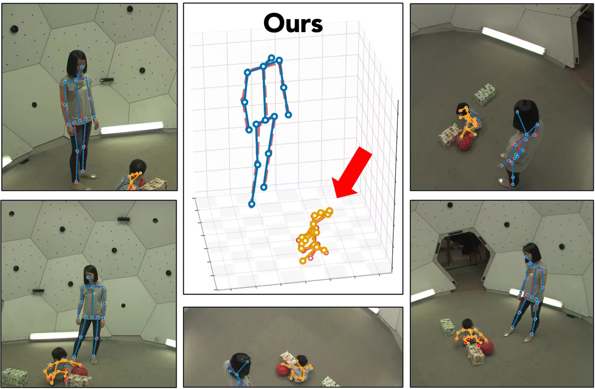
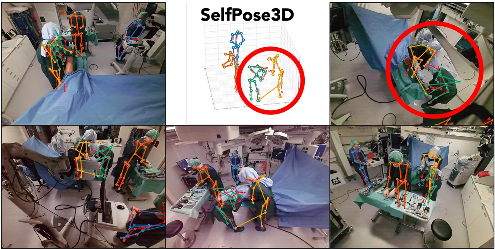
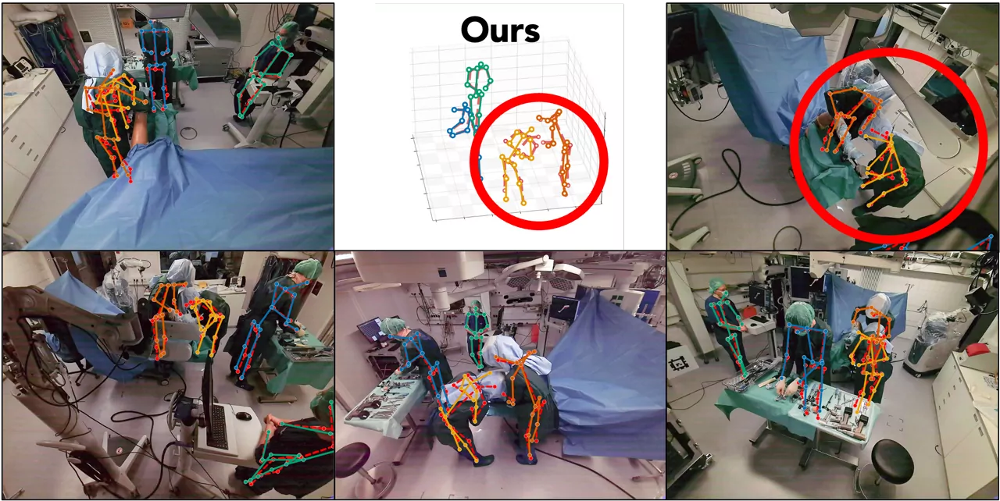

Multi-person 3D pose from several cameras, learned with no 3D ground truth.
1 · Disentangle assignment from regression
Match people first, then estimate their poses.
Who? link each person across views, triangulate the 3D root
Where? regress the full body on that root
Payoff: one model fits different camera rigs without fine-tuning
2 · Approximate discrete matching by leveraging diffusion
A combinatorial matching problem, made learnable.
Relax: discrete hypergraph matching to a continuous polytope of valid multi-view assignments
Diffuse: denoise toward a match, staying feasible at every step
Train: fully differentiable, no 3D ground truth
+0 AP25over the best self-supervised baseline on CMU Panoptic
3–4× fasterthan SelfPose3D across all view counts
+0% mAPover the best self-supervised baseline on unseen camera rigs

The pipeline. Stage I matches people across views and triangulates their 3D
root positions; Stage II regresses each full-body pose with a hypergraph-convolutional decoder.
Projected diffusion in motion. Detections across the camera views form a noisy
multi-view correspondence hypergraph. DisPOSE denoises it as a diffusion on the space of
polystochastic tensors (the sphere inset), projecting each reverse step back onto this
feasible set, until the correspondences resolve into consistent matches and full 3D poses.
Click the video to play or pause.
Key Contributions
Click any contribution card to jump to its dedicated section.
Existing multi-view 3D pose benchmarks (CMU Panoptic, Shelf, Campus) feature relatively moderate occlusion and standard street attire.
Real clinical scenes break both assumptions: surgeons wear loose smocks, the field is crowded with
medical equipment, lights and staff. We extend the
MM-OR dataset (Özsoy et al., 2025), recordings of knee surgeries, with 750 manually annotated 3D pose frames across three surgical sequences, releasing the labels as the MM-OR Pose benchmark.
MM-OR Pose · Ground Truth
Showcase of the new MM-OR Pose ground-truth annotations across the three labelled sequences
(004 PKA, 011 TKA, 036 PKA).
Abstract
TL;DR: a self-supervised framework that solves
multi-view person assignment as diffusion on the polystochastic polytope, then
regresses 3D skeletons with a hypergraph decoder. New self-supervised state of the art, robust to
unseen camera rigs, no 3D ground truth.
Recovering 3D human poses for multiple individuals from different camera views is a fundamental
bottleneck for analyzing interacting behaviors.
Existing self-supervised approaches rely on synthetic catalogues of 3D poses;
however, this leads to poor generalization in real-world scenarios due to distribution shifts.
We therefore introduce DisPOSE, a self-supervised framework that approximates the inherently discrete multi-view person-assignment problem as a generative diffusion process over the space of polystochastic tensors.
By employing differentiable Sinkhorn projections during denoising, our model learns to guide solutions toward feasible assignments based on 2D image priors.
The complete 3D skeletons of localized individuals are then regressed using a Hypergraph-Convolutional Decoder that explicitly models relational structures and
articulated joints across multiple views.
The proposed approach outperforms current state-of-the-art self-supervised methods on standard
datasets and demonstrates strong performance on a newly proposed benchmark featuring highly occluded
scenes from surgical operating rooms. Our diffusion-based localization demonstrates high label efficiency, retaining 99% of its performance with only 10% of the pseudo-labels. Disentangling the assignment and root regression components while maintaining differentiability makes DisPOSE nearly agnostic to different camera arrangements.
Contribution ① · Method
From Voxel Grids to a Diffusion on the Polytope
Prevailing methods fuse all views into a 3D voxel grid and solve assignment and regression jointly,
which ties the model to a fixed camera rig and hurts generalization. DisPOSE keeps the two apart and
recasts assignment as a matching problem over the multi-view hypergraph below.
Preliminary
From pairwise edges to hyperedges
Pairwise edges
An edge links two detections: “view 1 ↔ view 2 is the same person”. Many such pairwise edges must then be reconciled into a globally consistent matching (cycle consistency, synchronization). Local mistakes propagate.
Hyperedges (ours)
A single hyperedge groups one detection per view into one multi-view person hypothesis.
Consistency is enforced jointly across all cameras at once. The atomic unit of correspondence is the hypothesis rather than the pairwise match.
Following COMPOSE (Wang et al., 2026), DisPOSE adopts this higher-order formulation: every candidate cross-view association is a hyperedge of the multi-view correspondence hypergraph.
Stage I then runs diffusion on the polytope of hyperedge selections.
Stage I: Projected Polystochastic Diffusion
1Build a multi-view correspondence hypergraph from 2D root heatmaps
→
2Diffuse on the polystochastic polytope (Multi-Marginal Sinkhorn projection every step)
→
3Differentiable triangulation to 3D root locations
Per-view 2D root candidates (extracted via soft-argmax on the heatmaps Hv) become the nodes of a multi-view correspondence hypergraph; each hyperedge is a candidate cross-camera association.
We relax the discrete assignment over this hypergraph into a continuous polystochastic tensor: the multi-mode analogue of a doubly-stochastic matrix.

Stage I. A denoising hypergraph network operates on the polystochastic tensor space 𝒮(V).
Every reverse-time prediction is projected back onto the feasible polytope via Π𝒮, and differentiable triangulation produces per-individual 3D root locations 𝒫root.
A hypergraph denoiser learns the reverse-time process on this polytope.
At each step it predicts a clean assignment χ0; the differentiable Sinkhorn projection Π𝒮 then snaps the state back onto the polystochastic manifold, and a DDIM update walks the latent one step closer to t = 0.

Zoom on one reverse-time step. The latent ut is projected onto the polystochastic polytope via Π𝒮, denoised by fΘ to a clean estimate û0, and combined by the DDIM update above to produce
ut−1.
Iterating walks the latent through the projected forward chain until
t = 0.
Stage II: Hypergraph Pose Regression
1T-Pose initialization at each predicted 3D root
→
2Sample per-joint features at projected 3D locations in every view
→
3Hypergraph convolutions over cross-view + person-part edges
Each individual starts as a T-Pose 𝒫(0) anchored at its Stage-I root. We sample per-joint multi-view features at the projected 3D locations pv,k,j, then iteratively refine the pose 𝒫(τ) → 𝒫(τ+1) with a Hypergraph Convolutional Decoder.
The decoder runs attention over two edge types: cross-view hyperedges fuse evidence across cameras, and person-part hyperedges enforce articulated joint consistency. This resolves fine-grained pose without ever materialising a 3D voxel grid.

Stage II. Starting from T-Pose initializations sampled at projected 3D
locations, the Hypergraph Convolutional Decoder iteratively refines each skeleton over cross-view (blue) and person-part (pink) hyperedges, yielding the final per-root 3D pose 𝒫(T).
Results
DisPOSE leads every self-supervised baseline on all four benchmarks below, and the margin
grows on the hardest cases (surgery, unseen rigs).
We compare against fully-supervised, optimization-based, and self-supervised methods on
CMU Panoptic, Shelf & Campus, and the new MM-OR Pose; method names link to code where available.
Choose a dataset
Dataset 1CMU Panoptic
Large-scale multi-view dome capture (Joo et al., 2015) with moderate occlusion and
social interactions.
Bottom line: best self-supervised method on every metric, +11 AP25 over the next best.
Table 1
Pose estimation on CMU Panoptic. Best self-supervised results in
bold; DisPOSE row highlighted. † uses 9 temporal frames as input.
Among self-supervised methods, DisPOSE wins every metric: +11.0 AP25
over the next-best baseline and an 8% MPJPE improvement
(21.20 vs 23.10 mm).
DisPOSE also surpasses
every optimization-based competitor at every precision threshold.
Surgical operating rooms with loose attire, severe occlusion, and unusual postures.
5 calibrated cameras, 750 hand-annotated frames.
Bottom line: on hard surgical scenes DisPOSE nearly doubles AP50 and cuts joint error by 14 mm.
Table 2
Results on the proposed MM-OR Pose benchmark. Best results in
bold.
AP25 omitted: surgical helmets and gowns make
millimeter-precise GT annotation infeasible.
Surgical scenes break baselines.
SelfPose3D's AP50 collapses from 96.44 to 23.38, while DisPOSE doubles AP50 (+23.7), lifts Recall@500 by +2.7 points, and shrinks MPJPE by
14 mm.
Two classic small-scale multi-view benchmarks reported jointly. Shelf
(Belagiannis et al., 2014): 4 people interacting around a wooden shelf in a confined indoor space, 5 calibrated cameras.
Campus (Belagiannis et al., 2014): 3 subjects navigating an outdoor
courtyard, minimal 3-camera setup.
Bottom line: matches or beats every self-supervised baseline, and stays competitive with fully-supervised methods.
Table 3
Pose estimation on Shelf and Campus (PCP %). Best self-supervised results in
bold.
† uses 81 temporal frames as input.
Because assignment and regression are decoupled, DisPOSE is nearly
agnostic to the
camera arrangement. Voxel-grid baselines collapse on unseen rigs; DisPOSE holds its ground and even
improves
as more views become available.
View by
Bottom line: on unseen rigs the baseline collapses to ~30% root mAP; DisPOSE stays above 69% on every setup.
Table 4
Pose estimation across four unseen camera arrangements on
CMU Panoptic. No fine-tuning. Best results in bold.
Across all four unseen rigs, SelfPose3D's root mAP collapses to 29–51%; DisPOSE stays
above 69% on every setup and improves with denser arrays
(70.5% on 4-cam → 76.2% on 7-cam average).
Bottom line: DisPOSE keeps improving as cameras are added; SelfPose3D plateaus after four views.
Table 10
Scaling on the standard CMU0 setup with a varying number of inference
cameras (3 / 4 / 6 / 7).
DisPOSE improves monotonically as more cameras are added; SelfPose3D plateaus around
4 views. Best results in bold.
DisPOSE scales monotonically with view count: pose mAP climbs from 72.06 at 3 views
to a peak of 95.65 at 7 views, with MPJPE dropping from
47.3 mm to 20.5 mm.
SelfPose3D peaks at 4 views and then regresses (86.59 → 78.77 → 78.73): more cameras hurt it.
EfficiencyInference Latency & GPU Memory
Despite running a full diffusion-based assignment process, DisPOSE is 3–4× faster than SelfPose3D across every view count, with modest memory growth.
The differentiable Sinkhorn projection accounts for less than 3% of total runtime.
Efficiency · DisPOSE vs SelfPose3D
SelfPose3DDisPOSE
Inference latency (ms,
lower is better)
≈ 3–4× faster
Peak GPU memory (GiB,
lower is better)
Where the 452 ms goes (component share at 5 views)
Measured on a single NVIDIA A40, CMU Panoptic, batch size 8 (paper Tables 17
& 18).
The differentiable Sinkhorn projection costs 2.8–3.0% of total runtime;
“Other” groups all remaining operations (data movement, I/O, and post-processing).
QualitativeSide-by-side comparisons


Out-of-distribution generalization on CMU Panoptic.Red is the ground-truth pose.
SelfPose3D (left)
misses the crawling toddler — its
red ground truth is left unmatched, a result of training
on synthetic adult pose catalogues.
DisPOSE (right) detects and
articulates it.


MM-OR Pose, a bending surgeon.SelfPose3D (left)
fails on the non-canonical bent-over
posture. DisPOSE (right) recovers
both surgeons despite severe occlusion from sterile gowns and surgical helmets.
Limitations & Future Work
Limitation 1
No temporal modeling
Frames are processed independently; motion continuity is unused.
Temporal trajectory priors are a natural next step.
Limitation 2
Single-view occlusion
A person visible in only one camera cannot be triangulated, and therefore cannot be reconstructed.
BibTeX
@inproceedings{wang2026dispose,
title = {DisPOSE: Projected Polystochastic Diffusion for
Self-Supervised Multi-View 3D Human Pose Estimation},
author = {Wang, Tony Danjun and Birdal, Tolga and
Navab, Nassir and Bastian, Lennart},
booktitle = {Proceedings of the 43rd International Conference on
Machine Learning},
series = {Proceedings of Machine Learning Research},
publisher = {PMLR},
year = {2026},
}
This site is hosted on GitHub Pages. GitHub may collect anonymous analytics & security data.
Privacy policy.